データをカラーマップしたパラメトリック曲面図
3D-ParaSurf-DataColormap
サマリー
このチュートリアルでは3つの行列の情報から3D球を作成する方法を紹介します。さらに、表面には他の等高線を元にした表面温度を表すカラーマップ等高線により色を付けます。
- 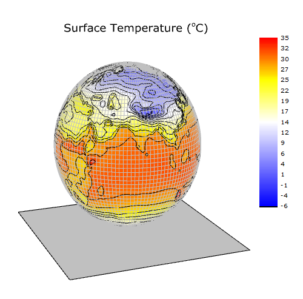
必要なOriginのバージョン: Origin 2015 SR0以降
学習する項目
このチュートリアルでは、以下の項目について解説します:
- 行列データからパラメトリック曲面を作成する
- 等高線の塗りつぶしを他の行列から行う
- 3Dパラメトリック曲面図を編集する
ステップ
このチュートリアルは、チュートリアルデータプロジェクト（<Origin EXE フォルダ>\Samples\TutorialData.opj）と関連しています。
また、「ラーニングセンター」からこのグラフを呼び出すことができます。(ヘルプ: ラーニングセンター メニューを選択、または キーボードのF11
キーを押して、グラフサンプルから、グラフサンプル：3D Function Plotsを選択します)
- TutorialData.opj を開き、プロジェクトエクスプローラ（PE）でParametric Surface
with Colormap from Dataを選択します。
- 行列FUNCA:1/4をアクティブにし、データを選択します。3Dおよび等高線グラフツールバーの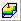 ボタンをクリックし以下のようなカラーマップ曲面を作図します。このカラーマップ曲面は、メニューから作図：3D：3Dカラーマップ曲面と操作しても作成できます。
- 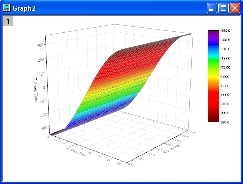
- グラフのプロット上でダブルクリックして、作図の詳細（プロット属性）ダイアログを開きます。面タブを開き、パラメトリック曲面にチェックを付け、X行列、Y行列をそれぞれにMat(2)とMat(3)
を設定します。
- 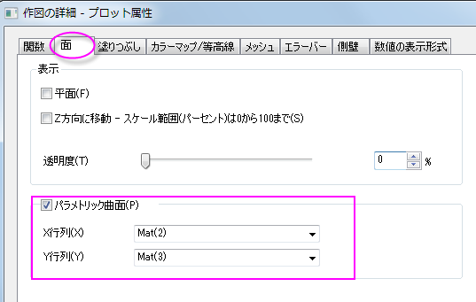
- OKをクリックして、ダイアログを閉じます。
- 軸の範囲内に全てのカラーマップ曲面を表示するには、グラフ操作ツールバーの再スケールボタン
 をクリックします。下図のようなカラーマップ曲面になります。
をクリックします。下図のようなカラーマップ曲面になります。
- 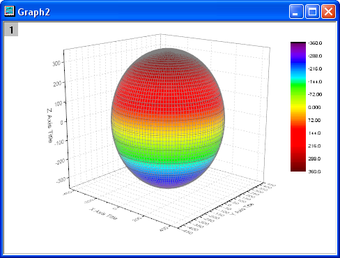
- プロットをダブルクリックして、作図の詳細ダイアログを開きます。このダイアログボックスを使用して曲面を編集します。表面のセクションの塗りつぶしタブでは、自身のチェックを外し、行列から等高線を塗りつぶすでMat(4)を選択します。適用をクリックします。
- 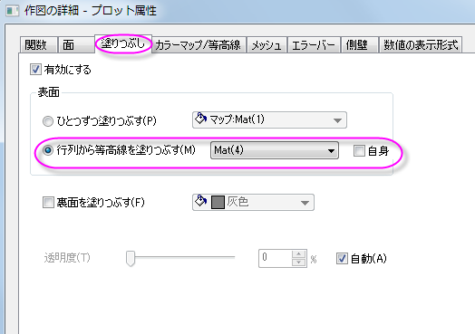
- カラーマップ/等高線タブをアクティブにします。レベルヘッダをクリックして、レベルの設定ダイアログを開きます。最小/最大の検索をクリックし、主レベル数と副レベル数をそれぞれ16と8にします。OKをクリックします。
- 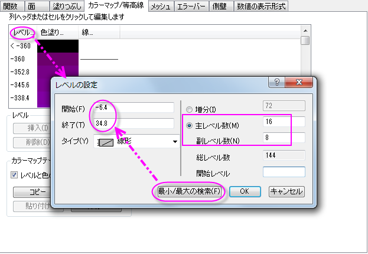
- 色塗りヘッダをクリックして、塗り方ダイアログを開きます。このダイアログは色スケールの編集をする為に使用します。パレットをロードオプションは使用可能なパレットのリスト内からパレットを選択できるようにします。パレットをロードからTemperatureを選択します。OKをクリックします。
- 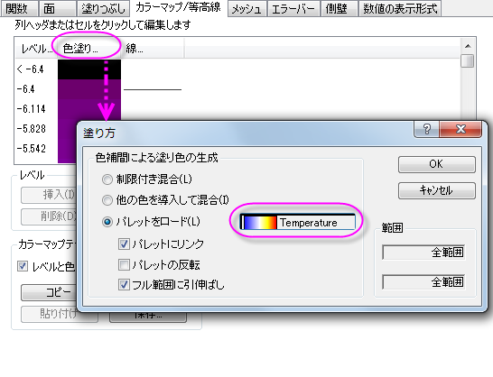
- メッシュタブをクリックします。線の太さを0.05に設定します。ドロップダウンメニューから選択すると値が無いので、入力ボックスをクリックして入力します。線の色を明るい灰色に設定します。適用をクリックします。
- 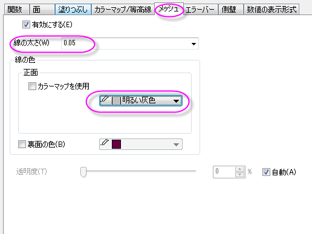
- 数値の表示形式タブでは小数点桁数のラジオボタンを選択し、値を0にします。
- 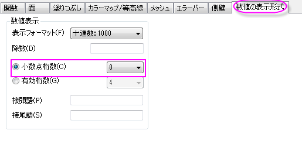
- OK をクリックして設定を適用し、作図の詳細ダイアログを閉じます。下図のようなグラフになります。
- 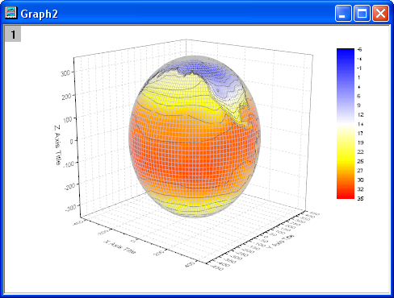
- 軸を編集します。Z軸をダブルクリックして、軸ダイアログボックスを開きます。スケールタブを開き、Zアイコンを選択します。開始と終了を、-400と400に設定します。
- 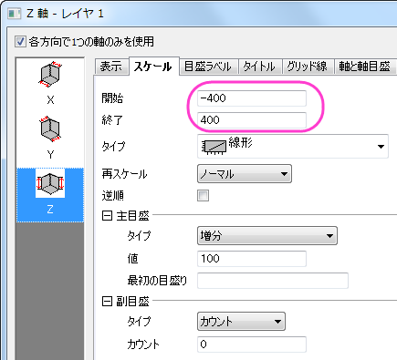
- タイトルタブを開きます。Ctrlキーを押しながらX、Y、Zのアイコンをクリックします。表示チェックを外して全ての軸のタイトルを非表示にし、OKをクリックしてダイアログを閉じます。
- 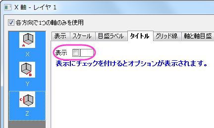
- XY面をダブルクリックし、作図の詳細（レイヤ属性）を開きます。軸を非表示にするため、表示項目セクションにあるX軸、Y軸、Z軸のチェックを外します。
- 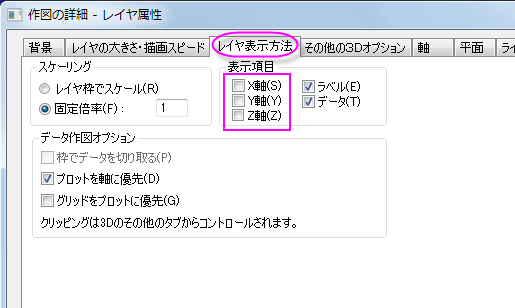
- YZ と ZXの面を非表示にするため、平面タブを開いてYZとZXのチェックを外します。残っている
XYの軸では色を明るい灰色に設定します。OKをクリックして、ダイアログを閉じます。
- 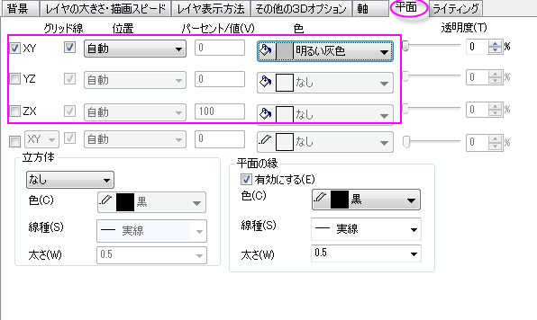
- 次に、色スケールを編集します。色スケールをダブルクリックして色スケール制御ダイアログを開きます。ラベルノードを開いてフォントをVerdanaに設定します。
- 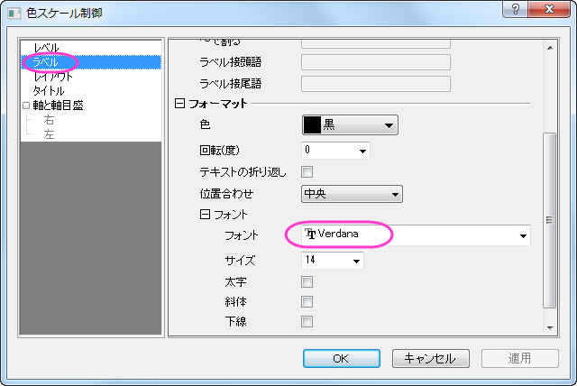
- 軸と軸目盛ノードを開き、境界と軸目盛を非表示に設定します。
- 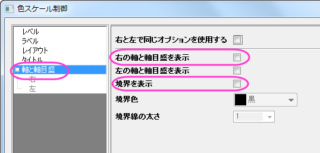
- OKをクリックしてこの設定を適用して、ダイアログを閉じます。色スケールオブジェクトをドラッグして適当な場所に移動します。
- グラフの白い部分を右クリックし、コンテキストメニューを開いてレイヤタイトルを追加/変更を選択します。別の場所を一度クリックして選択を解除してからその上で右クリックを行います。ショートカットメニューからオブジェクトの表示属性を選択してオブジェクトプロパティダイアログを開きます。テキストのフォントをVerdanaに設定し、テキストボックスにSurface
Temperature (\+(o)C)と入力します。OKをクリックします。
- 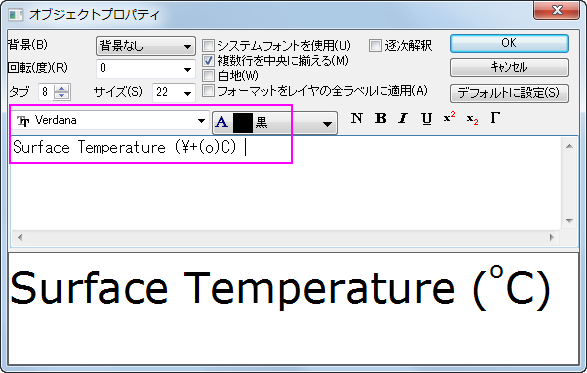
- 3Dフレーム内でグラフレイヤをクリックし（データプロットではありません）、以下のように表示される回転ボタンをクリックしてアクティブ回転モードにします。3Dグラフを回転させる際に使用できる他のツールとして、プロット操作・オブジェクト作成ツールバーの赤い回転ボタン、3D回転操作ツールバーの各種ボタン、プロットを選択してRキーを押しながらマウスで移動するという方法もあります。
- 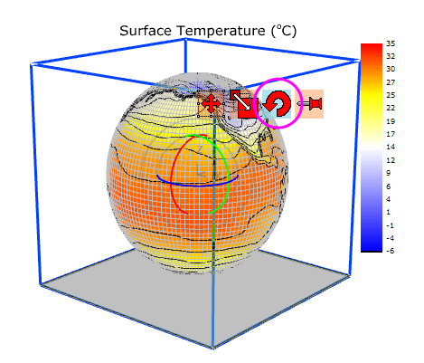
- グラフを回転させましょう。グラフは下図のようになります。